The Rabbit Ventures Podcast
Conversations with founders, operators, and investors.
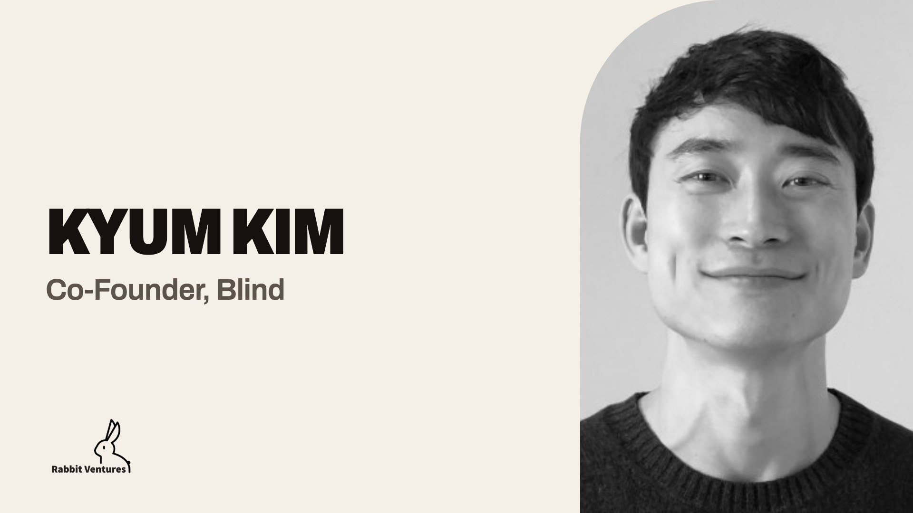
Latest · Ep 13Kyum Kim
Kyum talks about his time at TMon and Blind, and how he built Blind’s U.S. business from scratch.
Watch →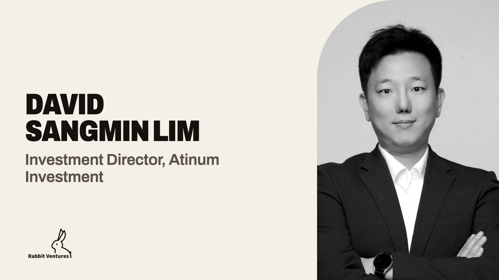
Ep 12David Sangmin LimDavid, Chang Kim, and Aviram Jenik discuss what Korean startups need to do to win in the global market.Watch →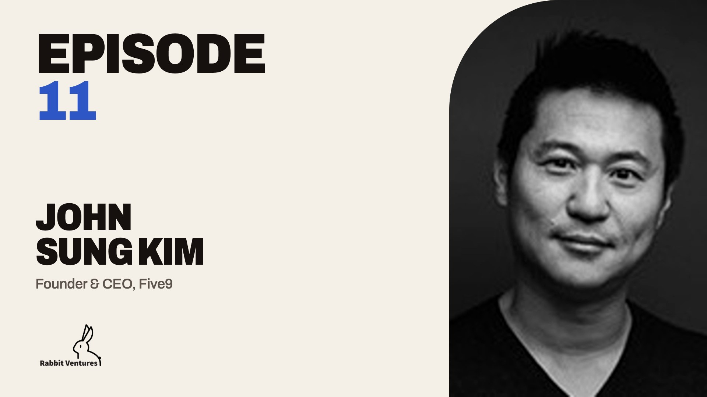
Ep 11John Sung KimJohn revisits the early days of his startup journey and the mistakes he made, his recent success, and what he’s building now.Watch →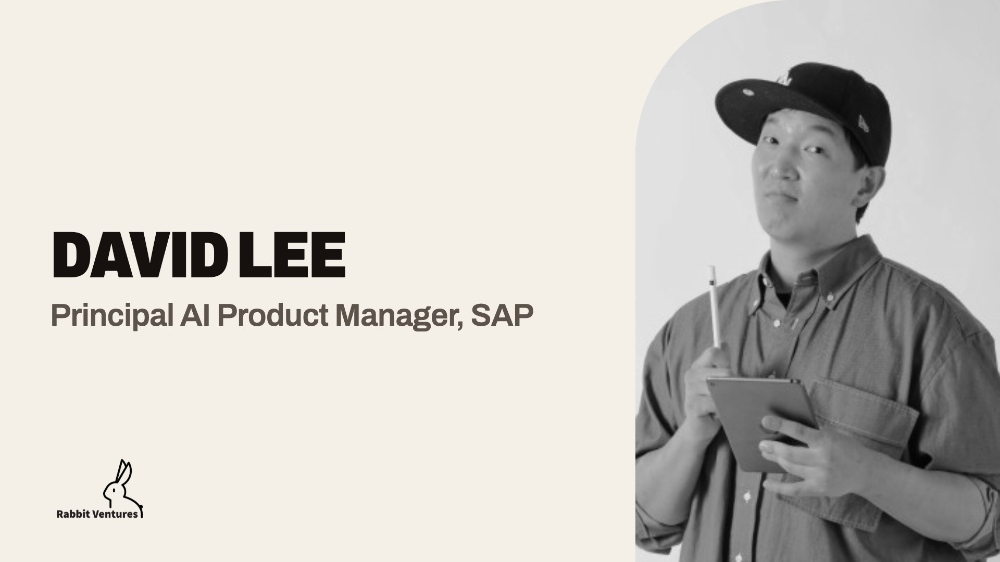
Ep 10David LeeDavid on high-context vs. low-context cultures, tips for UX/UI designers, his early entrepreneurial story, and more.Watch →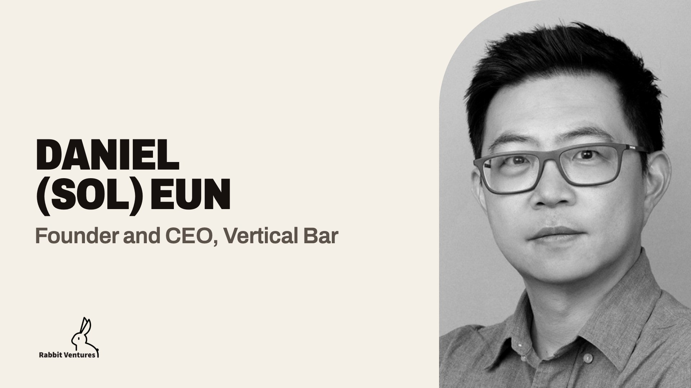
Ep 9Daniel (Sol) EunSol shares what it took to build and sell his startup, and his take on how more Korean startups can succeed in the U.S. market.Watch →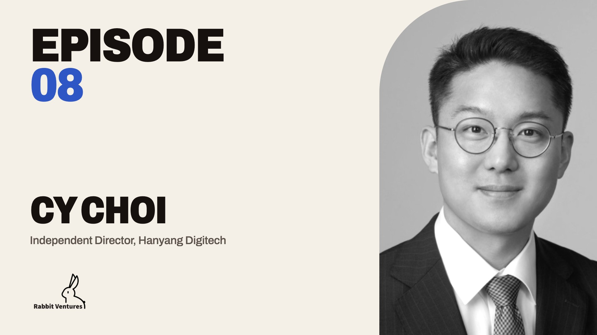
Ep 8CY ChoiCY walks through a career spanning an endowment fund, a venture capital firm, and a tech company where he oversaw M&A.Watch →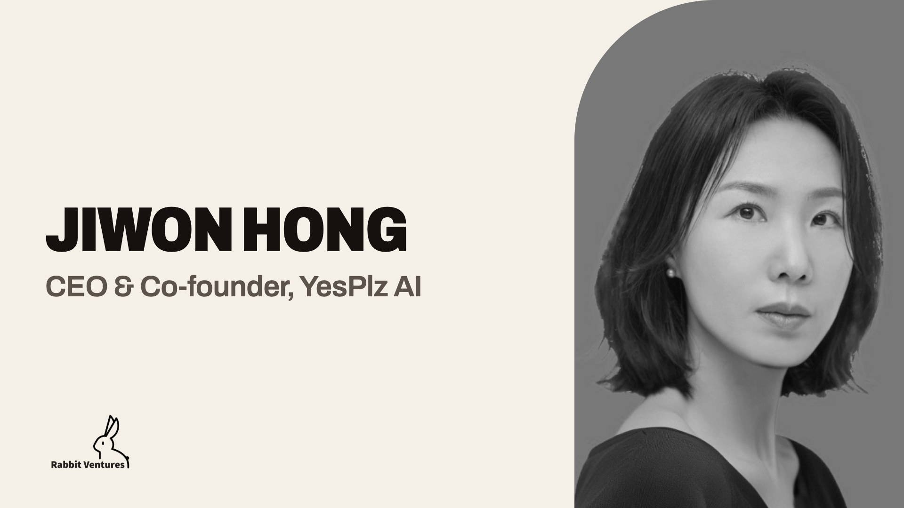
Ep 7Jiwon HongJiwon on leaving a big company to start her own, the sales techniques that worked, and her life-hack tips.Watch →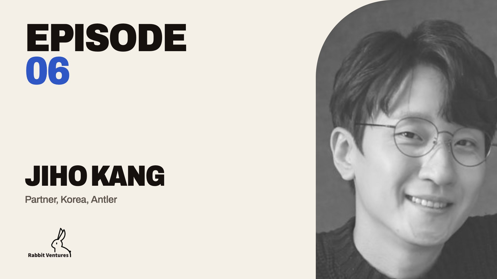
Ep 6Jiho KangJiho’s path from entrepreneur to investor, plus what he’s learned about Korean startups from Antler programs in different countries.Watch →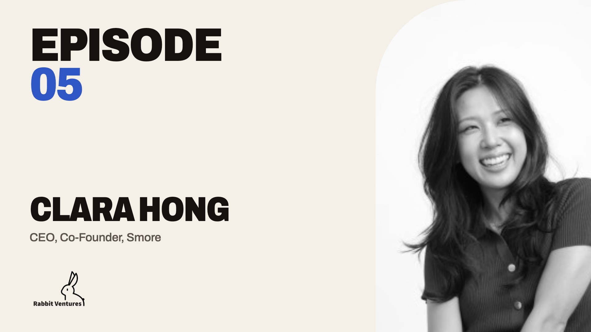
Ep 5Clara HongA conversation with Clara Hong of Smore.Watch →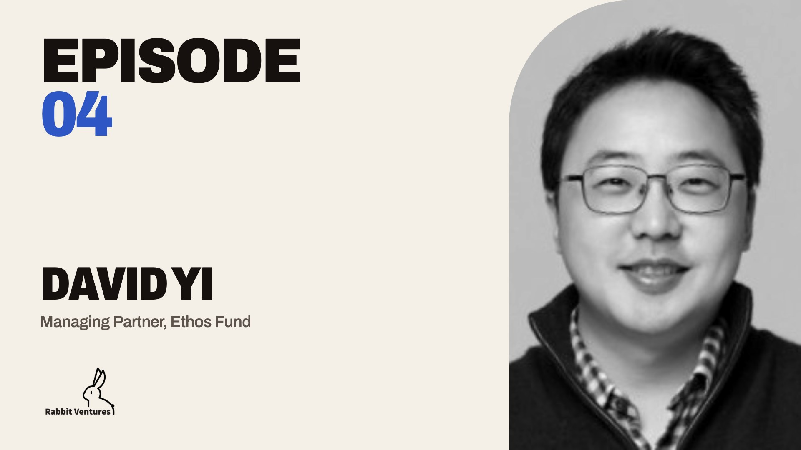
Ep 4David YiA conversation with David Yi of Ethos Fund.Watch →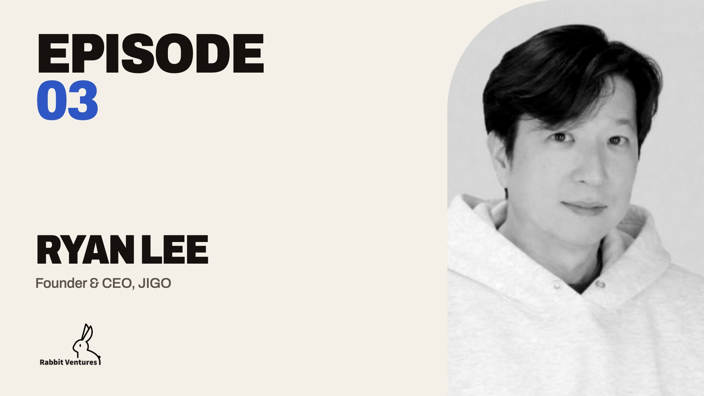
Ep 3Ryan LeeIn this third episode, we spoke with Ryan Lee about JIGO.Watch →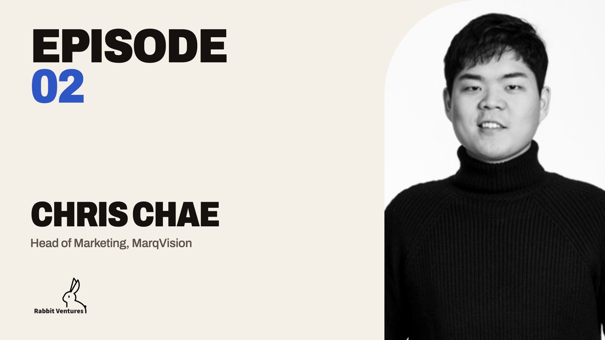
Ep 2Chris ChaeIn this second episode, we chatted with Chris Chae about building Relate.Watch →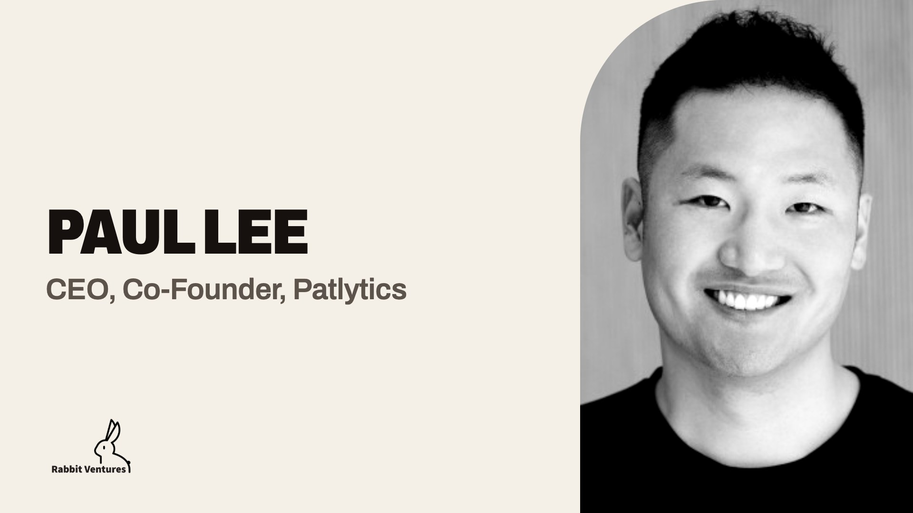
Ep 1Paul LeeIn this inaugural episode, we invited Paul Lee, Partner at Tribe Capital.Watch →